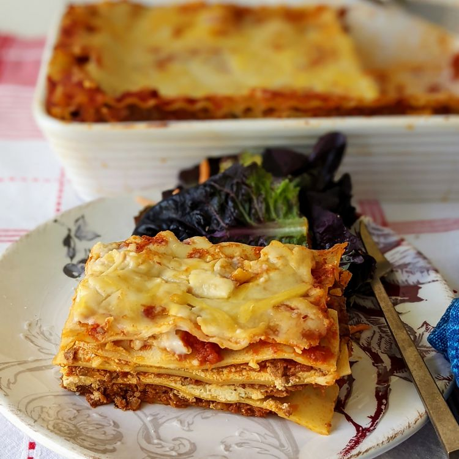

Lasagna

Making homemade lasagna much easier than it looks. You'll
find the full, step-by-step recipe below — but here's a
brief overview of what you can expect:
Ingredients
- Meat: ½ pound ground pork, ½ pound
lean ground beef.
- Onion: One Diced Onion.
- Canned Tomatoes: 1 Can tomato sauce
and 1 can crushed tomatoes.
- Fresh Herbs: two tablespoons parsley,
one crushed garlic clove.
- Sugar: A dash of sugar.
- Spices and Seasonings: Dried Basil,
Dried Oregano, Salt, and Black Pepper.
- Noodles: Uncooked or oven-ready.
- Cheese: Cottage Cheese, Parmesan, and
Shredded Mozzarella
- Eggs
How to Make
- Cook the meat: Cook the ground meat in a skillet until browned and crumbly. Add the onion and continue cooking until it's translucent. Stir in the canned tomato products, half of the parsley, garlic, basil, 1.5 teaspoons of salt, oregano, and sugar.
- Cook the noodles: Boil the lasagna noodles in lightly salted water until they're al dente.
- Make the cheese layer: Mix cottage cheese, Parmesan cheese, eggs, the remaining parsley, the remaining salt, and pepper in a bowl.
- Assemble the lasagna: Layer the ingredients according to the recipe (starting with sauce and ending with mozzarella) until the lasagna is assembled.
- Bake the lasagna: Cover with foil and bake in the preheated oven for about half an hour. Remove the foil and continue baking until the top is golden brown.